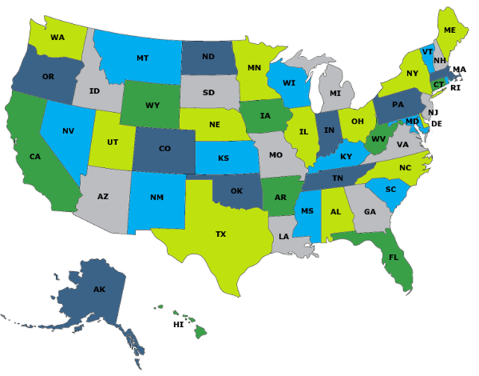

Аntiotladka choralarini tahlili. Mashina kodi trassirovkasi
Ishdan maqsad: Kiberhuquq sohasiga oid AQSH standartlari haqida ma’lumot olish va ularni qo’llash bo’yicha amaliy ko’nikmaga ega bo’lish
Qisqacha nazariy ma’lumot
Milliy standartlar va texnologiyalar asoslari instituti (NIST) tashkilotlarga muhim infratuzilma va sanoat nazorati tizimlariga kiberxavfsizlik xavfini boshqarish va kamaytirishga yordam berish uchun yaratilgan. NIST (Milliy standartlar va texnologiyalar instituti) iqtisodiy xavfsizlik va biznes samaradorligini oshirish uchun o'lchov standartlarini targ'ib qiluvchi va qo'llab-quvvatlaydigan agentlikdir. O'sib borayotgan xavfsizlik xatarlariga javoban, NIST tashkilotlar uchun kiberxavfsizlik bo'yicha eng yaxshi amaliyotda qo'llanma sifatida foydalanish uchun CSF (Kiberxavfsizlik Framework) va RMF (Risk Management Framework) ni yaratdi. 2020-yil yanvar oyida u tashkilotlarga shaxsiy maʼlumotlarni yaxshiroq himoya qilishga yordam berish uchun Maxfiylik asosini ishlab chiqardi. Shuningdek, AQSh sog'liqni saqlash sug'urtasi portativligi va javobgarligi to'g'risidagi qonun (HIPAA) Kennedi-Kassebaum qonuni sifatida ham tanilgan Sog'liqni saqlash sug'urtasi to'g'risidagi qonun 1996 yilda qabul qilingan federal qonun bo'lib, u odamlarga ish joyini o'zgartirganda tibbiy sug'urtasini saqlab qolishni osonlashtirishga qaratilgan. sog'liqni saqlash sohasidagi ma'lumotlarning maxfiyligi va xavfsizligi va sog'liqni saqlash sanoatiga uning ma'muriy xarajatlarini nazorat qilishda yordam berishga qaratilgan. Qonunning II sarlavhasi sog'liqni saqlash sohasidagi axborot xavfsizligiga tegishli. Bundan tashqari, Qo'shma Shtatlardagi shaxsiy ma'lumotlar hozirda sohaga oid federal qonunlar va shtat qonunchiligining to'plami bilan himoyalangan, ularning doirasi va yurisdiktsiyasi turlicha. Shuning uchun 50 shtatning barchasida biznes yurituvchi tashkilotlar uchun muvofiqlik muammosi juda katta.

Quyida ba’zi shtatlarning kiberxavfsizlik bo’yicha qonunlarning qisqacha mazmuni bilan tanishib chiqamiz.
Alabama shtati. 2018 yil, Qonun № 396
2018-yilda kuchga kirgan Alabama shtatining maʼlumotlar buzilishi toʻgʻrisidagi bildirishnoma qonunchiligi Alabama aholisining “shaxsni identifikatsiya qiluvchi sezgir maʼlumotlarini” oladigan yoki undan foydalanadigan tashkilotlardan zarar koʻrgan shaxslarni maʼlumotlarning ruxsatsiz qoʻlga kiritilishi haqida xabardor qilishni talab qiladi. Yozma xabarnoma imkon qadar tezroq va asossiz kechikishlarsiz va buzilish to'g'risidagi bildirishnoma olingan kundan boshlab 45 kundan kechiktirmay amalga oshirilishi kerak. Agar buzilish jabrlangan shaxslarga jiddiy zarar yetkazishi mumkin emasligi aniqlansa, ogohlantirish talab etilmaydi. Huquqi buzilgan uchinchi shaxslar tegishli maʼlumotlar yoki litsenziatlar egalarini 10 kun ichida xabardor qilishlari shart. Agar 1000 dan ortiq jismoniy shaxslar qoidabuzarlik haqida xabardor qilinishi kerak bo'lsa, huquqi buzilgan tashkilotlar ham Bosh prokurorni va 15 USC 1681a qonun bo'limida ta'riflanganidek, iste'molchilarga oid fayllarni umummilliy asosda tuzadigan va saqlaydigan barcha iste'molchi hisobot agentliklarini xabardor qilishi kerak.
Muayyan holatlarda alohida xabar berishga ruxsat beriladi va huquqni muhofaza qilish maqsadida xabarnoma kechiktirilishi mumkin. Tegishli federal va shtat qoidalariga, HIPAA (Health Insurance Portability and Accountability Act) yoki GLBA (Gramm–Leach–Bliley Act)ga muvofiq bo'lgan tashkilotlar ushbu qonunga rioya qilgan deb hisoblanadi. Tashkilot xabardor qilgan shaxslar soni 1000 dan oshsa, ular hali ham Alabama Bosh prokuroriga yozma xabar berishlari kerak.
Har bir qoidabuzarlik uchun 500 000 dollargacha bo'lgan fuqarolik jarimalari nazarda tutilgan. To'g'ri xabar bermaslik, har bir kun uchun xabarnoma qoidalariga rioya qilmaslik uchun kuniga 5000 AQSh dollari miqdorida qo'shimcha jarimaga olib kelishi mumkin.
Kaliforniya fuqarolik kodeksi 1798:29 va 1798:80 qonunlari.
2002-yilda kuchga kirgan Kaliforniya maʼlumotlarining buzilishi toʻgʻrisidagi qonun hujjatlari kompyuterlashtirilgan shaxsiy maʼlumotlarga ega boʻlgan yoki litsenziyaga ega boʻlgan tashkilotlardan Kaliforniya aholisiga shifrlanmagan shaxsiy maʼlumotlarning ruxsatsiz qoʻlga kiritilishiga olib keladigan yoki olib kelishi mumkin boʻlgan har qanday maʼlumotlar buzilishi haqida ogohlantirishni talab qiladi. Xabarnoma huquqni muhofaza qilish organlarining qonuniy ehtiyojlariga va buzilish ko'lamini aniqlash va ma'lumotlar tizimining oqilona yaxlitligini tiklash uchun zarur bo'lgan har qanday choralarga mos keladigan eng maqbul vaqtda va asossiz kechikishlarsiz amalga oshirilishi kerak. Muayyan holatlarda alohida xabar berishga ruxsat beriladi va huquqni muhofaza qilish maqsadida xabarnoma kechiktirilishi mumkin. Agar tashkilot 500 dan ortiq Kaliforniya aholisini xabardor qilishi kerak bo'lsa, sub'ektlar Bosh prokurorni xabardor qilishlari kerak. Tashkilot bildirishnomaning namunaviy nusxasini elektron shaklda taqdim etishi mumkin. Huquqi buzilgan uchinchi shaxslar ruxsatsiz sotib olinganligi aniqlangandan so'ng, tegishli ma'lumot egalari yoki litsenziatlarini darhol xabardor qilishlari kerak. Xabar berish tartib-taomillarini yurituvchi subyektlar, agar tartib-qoidalar qonun hujjatlariga muvofiq bo‘lsa va buzilgan taqdirda ularga rioya qilinmagan bo‘lsa, ushbu Qonunning xabardor qilish talablariga rioya qilgan hisoblanadi.
HIPAA bilan ta'minlangan tashkilotlar, agar ular HIPAA xabarnomasi talablariga javob bersa, ushbu qonunning ogohlantirish talablariga javob bergan deb hisoblanadi. Ushbu qonunning buzilishi natijasida jabrlangan har qanday mijoz zararni qoplash uchun fuqarolik da'vosini qo'zg'atishi mumkin.
Massachusets umumiy qonunlari 93H, 1-bo'lim.
2007-yilda kuchga kirgan Massachusets shtatining maʼlumotlar buzilishi toʻgʻrisidagi bildirishnoma qonuni Massachusets shtati aholisining shaxsiy maʼlumotlariga egalik qiluvchi, litsenziyalovchi, saqlaydigan yoki saqlaydigan tashkilotlardan shaxsiy maʼlumotlarning firibgarligi yoki oʻgʻirlanishi xavfini tugʻdiruvchi shifrlanmagan/shifrlanmagan maʼlumotlarni ruxsatsiz olish yoki ulardan foydalanish toʻgʻrisida xabardor qilishni talab qiladi. Agar tashkilot buzilish haqida bilsa yoki bilish uchun asos bo'lsa, ogohlantirish asossiz kechiktirmasdan amalga oshirilishi kerak. Huquqi buzilgan sub'ektlar, shuningdek, Bosh prokuror va iste'molchilar bilan ishlash va biznesni tartibga solish bo'yicha direktorni xabardor qilishlari kerak, ular keyinchalik har qanday tegishli ma'lumotlarni iste'molchi hisoboti agentliklari va davlat organlariga uzatadilar.
Huquqi buzilgan uchinchi shaxslar tegishli ma'lumotlar egalari yoki litsenziatlarni asossiz kechiktirmasdan xabardor qilishlari va ular bilan hamkorlik qilishlari kerak. Muayyan holatlarda o'rniga xabar berishga ruxsat beriladi va huquqni muhofaza qilish maqsadida xabarnoma kechiktirilishi mumkin. Tegishli shtat yoki federal qoidalarga rioya qiladigan tashkilotlar ushbu qonunga rioya qilgan deb hisoblanadi.
Nyu-York 899-a umumiy biznes qonuni va 208-Davlat texnologiyasi qonuni
2005-yilda kuchga kirgan Nyu-Yorkdagi maʼlumotlar buzilishi toʻgʻrisidagi bildirishnoma qonuni Nyu-Yorkda biznes yurituvchi va kompyuterlashtirilgan shaxsiy maʼlumotlarga egalik qiluvchi yoki litsenziyaga ega boʻlgan tashkilotlardan Nyu-York aholisini kompyuterlashtirilgan shaxsiy maʼlumotlarining ruxsatsiz qoʻlga kiritilishi haqida xabardor qilishni talab qiladi. Ogohlantirish asossiz kechiktirmasdan amalga oshirilishi kerak. Bosh prokuror, Iste'molchilar huquqlarini himoya qilish kengashi, NYS Davlat politsiyasi bo'limi va Axborot texnologiyalari xizmatlari idorasi ham xabardor qilinishi kerak.
Agar 5000 dan ortiq Nyu-York aholisi xabardor qilinishi kerak bo'lsa, huquqi buzilgan shaxslar ham iste'molchi hisobot agentliklarini xabardor qilishlari kerak. Huquqi buzilgan uchinchi shaxslar huquqbuzarlik aniqlangandan so'ng darhol tegishli ma'lumotlar egalari yoki litsenziatlarni xabardor qilishlari kerak. Muayyan holatlarda o'rniga xabar berishga ruxsat beriladi va huquqni muhofaza qilish maqsadida xabarnoma kechiktirilishi mumkin.
Vashingtonning qayta ko'rib chiqilgan kodeksi 19.255.010.
2005-yilda kuchga kirgan Vashingtonning maʼlumotlar buzilishi toʻgʻrisidagi bildirishnoma qonuni shaxsiy maʼlumotlarga egalik qiluvchi yoki litsenziyaga ega boʻlgan tashkilotlardan Vashington aholisini himoyalanmagan shaxsiy maʼlumotlarni ruxsatsiz qoʻlga kiritish toʻgʻrisida xabardor qilishni talab qiladi. Ogohlantirish asossiz kechiktirmasdan, qoidabuzarlik aniqlangandan keyin 45 kalendar kundan kechiktirmay amalga oshirilishi kerak.
Agar buzilish iste'molchilarga zarar yetkazishi mumkin bo'lmasa, ogohlantirish talab qilinmaydi. Agar 500 dan ortiq Vashington aholisi xabardor qilinishi kerak bo'lsa, tashkilot shuningdek, buzilishdan ta'sirlangan Vashington iste'molchilari soni bilan birgalikda Bosh prokurorga qoidabuzarlik to'g'risidagi bildirishnomaning namuna nusxasini elektron tarzda taqdim etishi kerak. Buzilgan uchinchi shaxslar huquqbuzarlik aniqlangandan so'ng darhol tegishli ma'lumotlar egalari yoki litsenziatlarni xabardor qilishlari kerak. Muayyan holatlarda o'rniga xabar berishga ruxsat beriladi va huquqni muhofaza qilish maqsadida xabarnoma kechiktirilishi mumkin. HIPAA himoyalangan tashkilotlar va o'zlarining xabar berish tartib-qoidalarini saqlaydigan tashkilotlar ushbu qonunning bildirishnoma talablariga javob bergan deb hisoblanadilar.
Topshiriq:
Amaliy ishning ketma-ketligi bilan tanishing;
Amaliy ish bo'yicha tahlil o‘tkazing va hisobot tayyorlang.
Kiberxuquq sohasiga oid AQSh standartlarini xalqaro standartlar bilan qiyosiy tahlilini o’tkazing .
AQSh hukumatining IT va kiberxavfsizlik bo'yicha standartlarini tahlil qiling.
Nazorat savollari:
Milliy standartlar va texnologiyalar asoslari instituti (NIST)ning vazifasi nimadan iborat?
AQSh sog'liqni saqlash sug'urtasi portativligi va javobgarligi to'g'risidagi qonunining (HIPAA) maqsadi nimadan iborat?
Amerika Qo'shma Shtatlaridagi shaxsiy ma'lumotlar federal qonunlar va shtat qonunchiligining to'plamlari bilan qanday himayalangan?